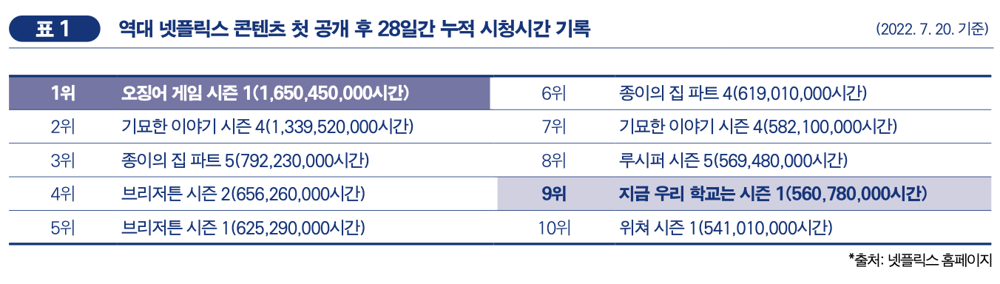
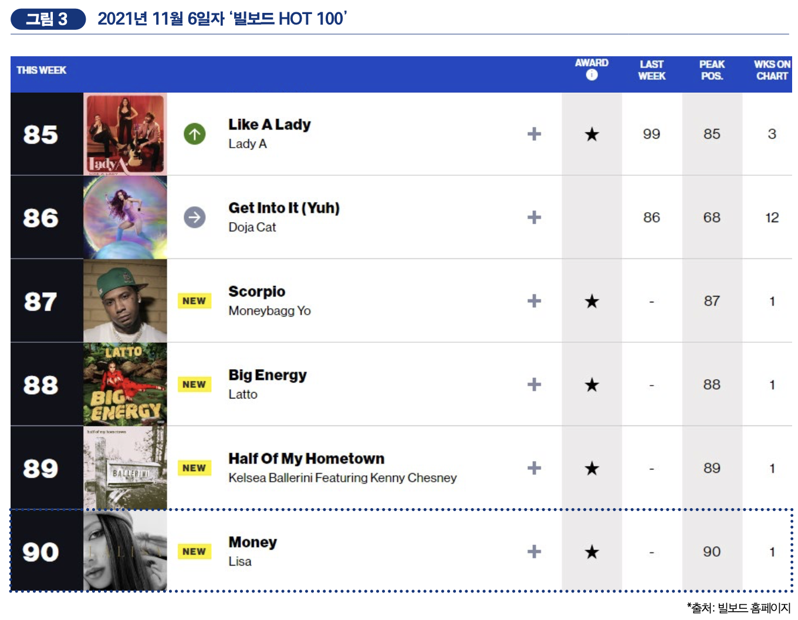
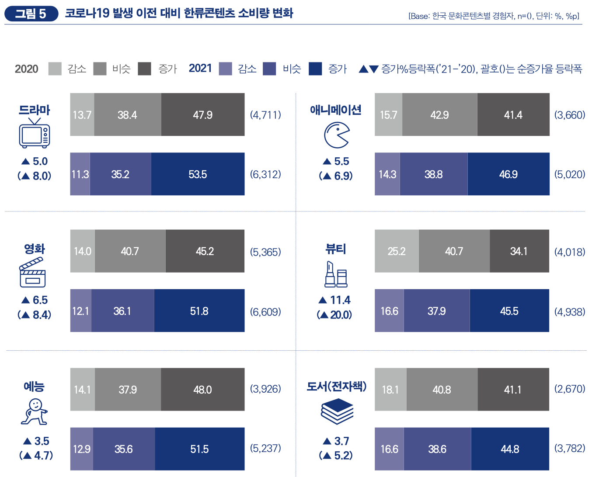
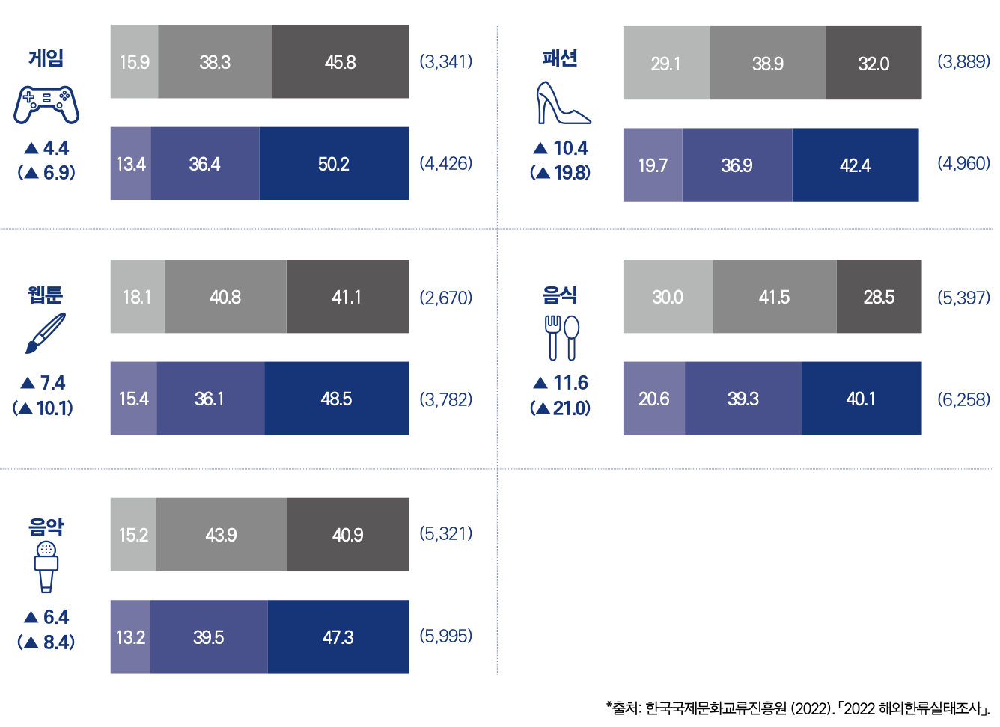
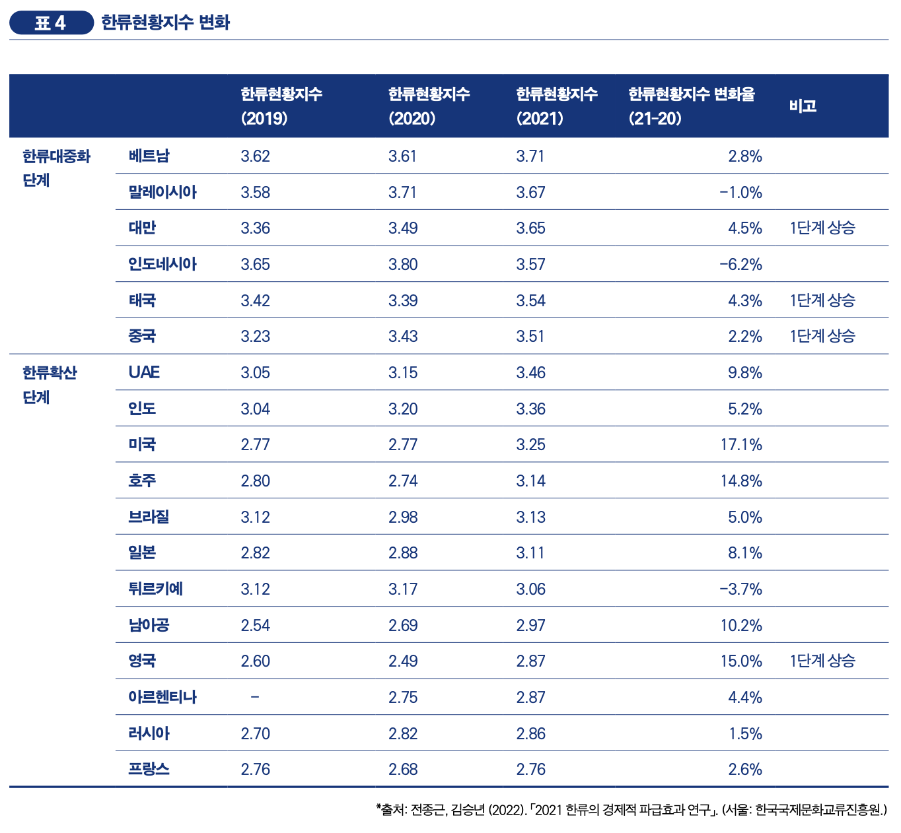
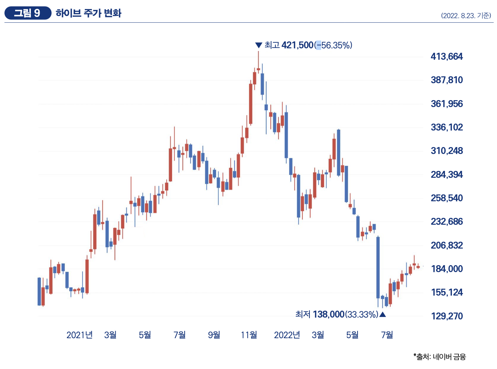

연간 이슈
<오징어 게임> 글로벌 신드롬
지난 1년간 한류는 <오징어 게임>이 견인했다고 해도 과언이 아니다. <오징어 게임>은 2021년 9월 17 일에 처음 공개된 이후 글로벌 OTT 콘텐츠 관련 모든 기록을 새로 썼다. 2021년 10월 13일, 넷플릭스는 <오징어 게임>이 역대 가장 많은 시청 가구수를 기록한 콘텐츠라고 발표했다(중앙일보, 2021. 10. 13.)1. 첫 28일 동안 1억 4,200만 가구가 <오징어 게임>을 시청했는데 이는 기존 최고 기록이었던 <브리저튼>의 8,200만 가구를 큰 차이로 뛰어넘은 수치고 역대 최초 1억 가구 시청 돌파 기록이기도 하다. 또한 넷플릭스가 홈페이지를 통해 공식적으로 콘 텐츠별 시청 시간을 공개했는데, <오징어 게임>은 첫 28일 동안 약 16억 5,000만 시간의 누적 시청 시간을 기록했 다. 이는 역대 1위 기록이며 2위인 <기묘한 이야기> 시즌 4와도 3억 시간 정도의 격차를 보인다. <오징어 게임>은 넷플릭스가 정식 서비스 중인 모든 국가(83개국, 2021년 10월 기준)에서 1위를 달성한 최초의 작품이라는 타이틀도 얻었다. ‘TV 쇼’에 국한된 순위뿐 아니라 넷플릭스에서 유통하는 전체 콘텐츠를 대상으로 집계한 종합 순위에서도 <오징어 게임>은 모든 국가에서 1위를 차지했으며, 총 53일(46일 연속)간 1위를 유지했다(동아일보, 2022. 2. 28.)2. <오징어 게임> 공개 이후 3주 만에 넷플릭스의 시가총액은 약 24조 4,343억 원(+7.87%) 증가했으며, 2021년 3분기 신규 가입자 수 역시 예상치를 상회한 440만 명을 기록했을 정도로 <오 징어 게임>의 파급력은 컸다(중앙일보, 2021. 10. 10.)3. 전 세계 네티즌 간 화제성을 간접적으로 확인할 수 있는 위키피디아 콘텐츠(드라마) 페이지 방문자 수도 <오징어 게임>이 종전 1위였던 <왕좌의 게임>보다 더 많았다(그림 1. 참조). 「2022 해외한류실태조사」의 ‘최선호 한국 드라마’ 조사 결과도 <오징어 게임> 신드롬을 방증한다. <오징 어 게임>은 21.1%의 선호도를 기록해 2위인 <사랑의 불시착>(2.2%)과 0배 가까운 격차를 보였다
케이팝, 그리고 팬덤 문화
혼종성이 K-Pop의 특성과 인기 요인 중 하나로 부각된 진 오래 됐지만 그 정도는 계속해서 강화되고 있다. 아이돌 그룹 멤버 구성부터 해외 전문가들과의 협업까지 K-Pop 콘텐츠 제작과 유통 전 과정에서 초국적 요소는 선택이 아니라 필수가 됐다. 특히 2021년 9월 발매된 블랙핑크 태국인 멤버 리사의 솔로 데뷔앨범은 K-Pop 정체성에 대한 재논의의 도화선이 되었다. 리사의 본명을 딴 앨범 《LALISA》는 역대 K-Pop 여자 솔로 가수 앨범 최다 판매량인 초동(발매 첫 일주일간 판매량) 75만장, 누적 95만장을 기록했다(2022. 8. 4. 기준). 동명의 타이틀곡 'LALISA'는 유튜브 조회수 5억회 이상을 기록 중이고 ‘아이튠즈 송 차트’에선 65개국에서 1위를 차지했다. 또 수록곡 'MONEY'는 스포티파이에서 4억회 이상 스트리밍 되었고 K-Pop 여자 가수 수록곡 최초로 ‘빌보드 HOT 100’에 90위로 차트인 했다.
코로나19 장기화에 따른 한류 소비 확대
2021년에 코로나 발생 이전과 비교해 소비량이 증가한 콘텐츠(증가응답비율)는 ‘드라 마’(53.5%), ‘영화’(51.8%), ‘예능’(51.5%), ‘게임’(50.2%) 등 주로 영상콘텐츠였다. 2020년과 비교하면 모든 콘텐츠에서 ‘감소’와 ‘비슷’ 응답 비율은 하락한 반면 ‘증가’ 응답 비율은 상승했다. 전년도 증가율과 비교한 순증가율 역시 음식(21.0%p)부터 예능(4.7%p)까지 모든 콘텐츠가 상승했다. 이는 코로나19 장기화에 따른 비대면 소비 행태 보편화와 더불어 <오징어 게임>의 파급효과로 보인다. 전년과 마찬가지로 ‘뷰티’(16.6%), ‘패션’(19.7%), ‘음식’(20.6%) 등 대면 소비가 중요한 콘텐츠는 다른 콘텐츠보다 ‘감소’ 응답 비율이 높았다.
 한류의 대중화
일부 국가를 제외하고 대부분의 국가에서 한류현황지수가 상승했다. 특히 미국(17.1%), 영국 (15.0%), 호주(14.8%), 남아공(10.2%)은 전년 대비 두 자릿수의 지수 상승률을 보였다. 전년도에 미주, 유럽 국가들에서 대부분 퇴보 현상이 나타난 것과 정반대 결과다.
방탄소년단 이후의 케이팝, 그리고 한류
2022년 6월 14일, 방탄소년단은 데뷔 9년 만에 그룹 활동 잠정 중단을 선언했다. 그룹 해체까지는 아니지만 최전성기를 누리고 있었던 상황에서 이들의 잠정 활동 중단은 K-Pop뿐 아니라 한류 전체에 큰 파 장을 미칠 것이라 우려하는 목소리가 많다. 실제로 소속사 하이브의 주가는 활동 중단 발표 하루 만에 25% 가까이 폭락했고 시가총액도 2조 가까이 증발했다(중앙일보, 2022. 6. 15.).
